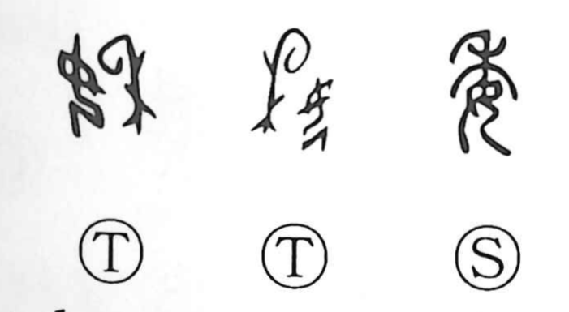

委

Kun: yudaneru, makasu | On: i
entrust ・ delegate ・ leave to ・ committee
Explanation
Shirakawa reads 委 as a ritual image: the graph combines 禾, a rice spray worn as a headdress and emblem of the rice spirit, with 女, a woman. It portrays a woman dancing with the rice plant on her head during the rice‑planting ceremonies that sought a rich harvest; a paired male dance is reflected in 年, which in antiquity showed a person beneath a rice plant. Because the woman’s dance is low and supple, the character came to suggest low, compliant, and yielding attitudes, hence the sense of entrusting or leaving a matter to another. From this notion of pliancy arose nuances like feeble or worn thin, and related graphs such as 萎 (wither) and 痿 (numb, weakened) carry this thread of withering and loss of vigor.